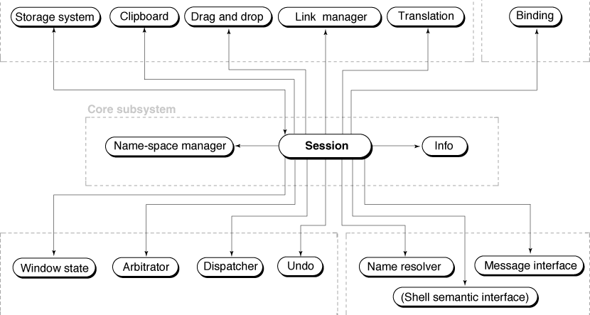
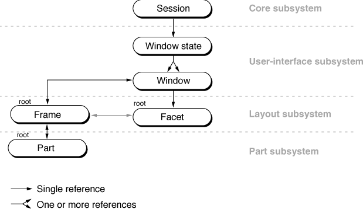
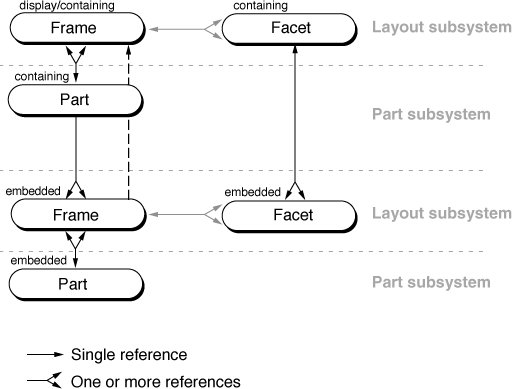
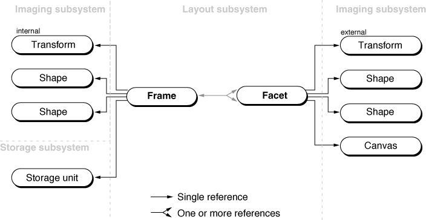
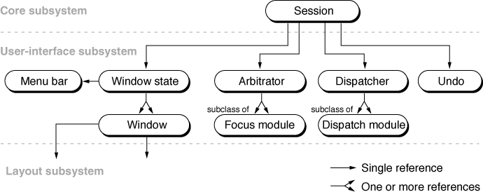
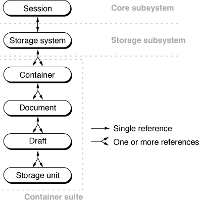
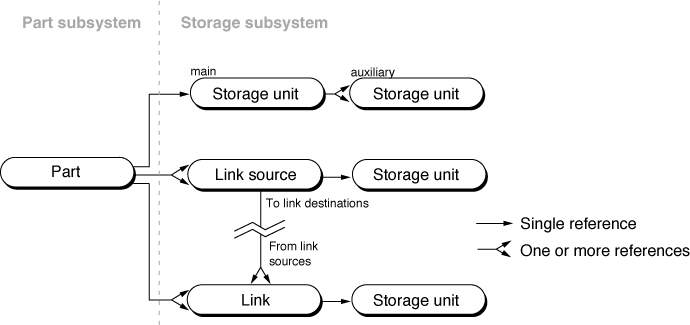
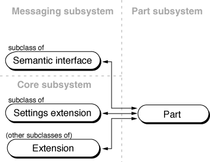

Runtime Object Relationships
The runtime state of an OpenDoc document involves relationships among a variety of objects instantiated from the OpenDoc classes (see Figure 2-1). Taken together, the diagrams in this section show the principal runtime relationships among the major OpenDoc objects for a single document. The details of the interactions among the objects are explained elsewhere in this book.The objects are instantiated from groups of classes in individual shared libraries called subsystems. OpenDoc is distributed as a set of subsystems. Platform developers, in providing OpenDoc on a given platform, can implement or replace individual subsystems. Part-editor developers generally need not be concerned with the characteristics of specific subsystems. For information purposes, however, subsystem boundaries are shown on the runtime object diagrams presented in this section.
The Session Object
When an OpenDoc document is open, the session object occupies a central place in the relationships among the objects that constitute, support, and manipulate the document. Figure 11-4 shows the uppermost levels of that relationship.Figure 11-4 Runtime relationships of the session object

All figures in this book that illustrate runtime object relationships use the following conventions:As Figure 11-4 shows, the session object maintains many (mostly one-way) relationships with other objects, allowing your part to gain access to many objects through the session object. The objects are grouped into categories according to the kinds of tasks they perform together; the following subsections discuss and expand upon the object relationships in terms of those categories. Note also that Figure 11-4 is incomplete; Figure 11-5
- Individual objects are represented as labeled oval boxes.
- Arrows between the boxes show object references (equivalent to pointers
in C++), as defined primarily by the availability of accessor functions for them in the public interface to OpenDoc. The references as shown here may not strictly mirror the actual (private) references that exist between OpenDoc objects.(Various shades or patterns used on the arrows are for visual distinction only; they do not imply different kinds of object references.)
- A mutual reference between a pair of objects is represented by an arrow with a head on each end.
- A one-to-many relationship, in which one object can simultaneously reference more than one other object of a given kind, is represented by an arrow with a double head on one end.
- In diagrams that show an embedding hierarchy (such as Figure 11-6), objects lower in the diagram are embedded more deeply than the objects above them. Objects at the same height are at the same level of embedding.
Session-Level Objects
As Figure 11-4 shows, the session object instantiates and maintains direct references to the following objects, accessible globally to all parts in a document.If your part needs to access any one of these session-level objects, first obtain a reference to the session object by calling the
- OpenDoc uses the binding object to pick the proper part editor for each part in a document, both when the document is opened and whenever a new part is added to it. Binding is further discussed in the section "Binding".
- Both OpenDoc and part editors use the translation object, a wrapper for available platform-specific data translation services. If no editor is available that can manipulate the data of a part, or if the user wants the data in a different format, OpenDoc or a part editor can translate the data of a part into a part kind for which a specific translator exists. See "Translation" for more information.
- The name-space manager keeps track of all name space objects, which themselves contain tables of information needed for registration purposes. See "Name Spaces" for more information.
- The window state object is a list of all the open windows in which OpenDoc parts are displayed. The window state object references each open window; see Figure 11-5, in relation to other objects of the user-interface subsystem.)
- The storage system object controls persistent storage for the session. The storage system references one or more container suites; see Figure 11-9.
- The clipboard object is a session-wide object that represents the clipboard. It references a storage unit that represents the data held on the clipboard.
- The drag-and-drop object is also a single session-wide object. It references a storage unit that represents the data to be transferred by a drag operation.
- The dispatcher accepts user events from the underlying operating system through the document shell and dispatches them to part editors. It references dispatch modules, as shown in Figure 11-8.
- The arbitrator negotiates temporary ownership of a focus, the designation of a shared resource such as the menu bar, keystroke stream, and so on. It references focus modules, as shown in Figure 11-8.
- The undo object stores command histories for all parts in the document. It allows parts to reverse or restore the effects of multiple previous user commands. There is a single, session-wide undo object used by all parts in a document.
- The name resolver resolves object specifiers into particular objects on which semantic events can operate.
- The message interface transfers semantic events into and out of parts. If a part editor needs to send (rather than receive) semantic events, it uses the message interface. Other objects related to semantic events are shown in Figure 11-11.
- The Info object represents the Part Info dialog box, an extensible dialog box used by part editors. Other objects related to extensions are shown in Figure 11-11.
- The link manager keeps track of cross-document links, facilitating the transfer of information between the source and destination parts. The link manager is used only by the document shell and container applications; parts need never access to it. The link manager is built on platform-specific facilities; on the Mac OS platform, for example, it uses the Edition Manager. Other objects related to linking are shown in Figure 11-10.
- The shell semantic interface is an instance of a subclass of
ODSemanticInterfacethat represents the scripting support built into the document shell. See the note "Document shell semantic interface" for more information.GetSessionmethod of your part's storage unit. Then call the specific method of the session object (such asGetClipboard) that returns a reference to the needed object. To facilitate repeated access to the session object, you might store the results ofGetSessionin a part field with a name such asfSession.Drawing-Related Objects
The objects that make up the OpenDoc drawing capability provide a set of platform-independent protocols for embedding (placing embedded frames within the content of a part), layout (manipulating the sizes and locations of embedded frames), and imaging (making part content and frames visible in a window). They describe part geometry in a document and provide wrapper objects for certain platform-specific imaging structures, whether for printing or for screen display.The Window State and Windows
Figure 11-5 is a simplification of the runtime object relationships among the objects involved with a document window. It is a continuation of one branch of Figure 11-4 and shows the upper-level relationships between a window and the parts it contains.Figure 11-5 Window-related object relationships

The window state object, referenced by the session object, references one or more window objects, which are wrappers for platform-specific window structures.Each window object references a single facet object (the root facet), the visible representation of the frame object (the root frame) that is the display frame of the outermost part (the root part) in the document displayed in the window. The root frame in turn references the root part, which controls some of the basic behavior (such as printing) of the document. The root frame and root facet fill the content region of the window.
This relationship of window to root facet, root frame, and root part applies whether the window is a document window or a part window opened from an embedded frame.
The embedding relationships among facets, frames, and parts shown in Figure 11-5 is not complete; it continues down through all parts in the document. The root facet references its embedded facets, and the root part references its embedded frames, as shown in the next section.
Embedding
Figure 11-6 shows the relationships among facet, frame, and part objects at any level of embedding in a document. It is a direct continuation of Figure 11-5 but also applies at any level of embedding. In this and all other object diagrams that show embedding relationships, objects lower in the diagram are embedded more deeply than the objects above them.The first thing to note from Figure 11-6 is that embedding is represented by two separate but basically parallel structures.
Figure 11-6 General embedding object relationships
- On the left side of the figure, each part references one or more display frames (the frames in which the part's contents are displayed) and zero or more embedded frames. Those embedded frames, in turn, reference the parts for which they are the display frames. The document embedding structure is thus a frame-to-part, frame-to-part sequence in which each part only indirectly references its embedded parts. Furthermore, an embedded frame does not directly reference its containing part; instead, it references its containing frame, a display frame of its containing part.

Connecting the two hierarchies are the frame-to-facet references. Each frame that is visible references the facet or facets that correspond to it. (A frame can have more than one facet.) Each facet likewise references its frame. Note that facets need not exist unless their frames need to be drawn.
- On the right side of Figure 11-6, the facets for the frames form their own, simpler hierarchy. Each containing facet directly references its embedded facets, and each embedded facet directly references its containing facet. This more direct imaging hierarchy allows for fast event dispatching by OpenDoc.
For a specific example of this embedding-object relationship in a given document, see Figure 3-1
Layout and Imaging
The frame and facet objects shown in Figure 11-6 have additional references besides those shown. A part's display frame (or frames) and facet (or facets) use several other OpenDoc objects when laying themselves out and preparing to draw the content of their part. Figure 11-7 shows these additional relation-
ships for a given frame-facet pair at any level of embedding.Figure 11-7 Layout and imaging object relationships

Each display frame object for the part being drawn can include references to these objects:Each of the facet objects for the part being drawn represents an area within a window (or printer image) that corresponds to a visible display frame (or part of a frame) of the part. The facet can include references to these other objects, which hold platform-specific drawing information:
- a transform object (the internal transform) that defines the geometric offset or transformation of the part within its frame
- a shape object (the frame shape) that defines the basic shape of the frame
- another shape object (the used shape) that defines the portion of the frame shape that is actually drawn into
- a storage unit, for storing the state of the frame into its document (unless it's a nonpersistent frame)
During the layout and imaging process, a part editor is typically asked to draw the contents of a particular facet. The part editor gets the clipping, transformation, and layout information from the facet and its frame, and then makes platform-specific graphics calls to perform the actual drawing.
- a canvas object that describes a platform-specific drawing context or structure
- a transform object (the external transform) that defines an external geometric offset or transformation for the facet within the containing part
- a shape object that defines the clip shape for the facet (what portion of the frame shape is drawn)
- another shape object that defines the active shape for the facet (what portion of the frame shape accepts events)
For a more complete description of the relationships among frames, facets, and parts, see Chapter 3, "Frames and Facets." For a more complete description of the drawing process, see Chapter 4, "Drawing."
User-Interface Objects
Runtime relationships in the user-interface subsystem include some objects not directly referenced by the session object. Figure 11-8 extends a portion of Figure 11-4 to show these additional objects:Figure 11-8 User-interface object relationships
- The window state object references (in addition to all window objects) the menu bar object, which represents the base menu bar created by OpenDoc. Your part copies and adds to this menu bar to create its menus.
- The dispatcher references one or more dispatch modules, which control which frame or part handles each event. The dispatching system is modular; you can extend it to handle new classes of events by adding dispatch module objects.
- The arbitrator references one or more focus modules, which allocate temporary ownership of shared software or hardware resources. Like the dispatcher, the arbitrator is modular; through addition of focus modules, you can extend it to handle new classes of shared resources.

Storage Objects
The storage capabilities of OpenDoc include both document storage and data transfer. As Figure 11-4 shows, five objects directly referenced by the session object are involved with storage issues.Document Storage
OpenDoc manages persistent storage for parts and other objects in documents. Storage in OpenDoc consists of structured storage elements that can contain many data streams. Figure 11-9 shows the main storage-related objects and their runtime relationships. It is a continuation of one branch of Figure 11-4.Figure 11-9 Storage-container-document relationships

These objects combine to make up a container suite, a specific implementation of the OpenDoc storage architecture. Container suites can be implemented in different ways on different platforms and need not be limited to file-based systems. Here is how the objects relate to each other:Besides being referenced by its draft, each storage unit is also referenced by the object whose data it stores. As Figure 11-10 shows, for example, a part has a reference to its main storage unit.
- The storage system object, referenced by the session object, instantiates and maintains a list of container objects. Each container may contain one (or possibly more, depending on the capabilities of the container suite) document objects, each of which represents an OpenDoc document.
- Each document contains one or more draft objects. Each draft is unique and represents a snapshot of the document's state at a particular moment.
- Each draft contains a number of storage-unit objects. Each storage unit can contain several different data streams, all of which provide information about the object to which the storage unit applies. The data streams, or values, in a storage unit are identified by property name (the kind of information contained) and value type (the data type of that information). A storage unit can hold more than one property, and a property can hold streams of more than one value type.
Storage units and the storage system are described in more detail in Chapter 7, "Storage."
Part Storage
Figure 11-10 shows additional object references maintained by the part object, beyond those shown in Figure 11-6, that facilitate data transfer.Figure 11-10 Part-storage relationships
- A part object that contains the source of a link references a link-source object, created by the part that contains the source data. The link source references (a) a storage unit that holds a copy of the source data for the link and (b) one or more link objects.

Figure 11-10 also shows how a part must organize the storage of its content. To store its data in its draft, the part references its one main storage unit, which in turn can reference other auxiliary storage units.
- A part object that contains the destination of a link references a link object. The link object references a storage unit that holds a copy of the source data for the link. (Links and link sources for an intradocument link share the same storage unit.)
Storage for data transfer and other data-transfer issues are described in more detail in Chapter 7, "Storage."
Extension Objects and Semantic Events
OpenDoc provides a flexible method for extending its capabilities through an extension interface. Extensions to objects such as parts provide interfaces through which callers can access additional functionality.Figure 11-11 shows additional object references that a part object can maintain, over and above those shown in Figure 11-10.
Figure 11-11 Part-extension relationships
- Part editors expose their extended interfaces to other parts through an extension object (a subclass of
ODExtension). A part can define an extension for any purpose.
- If a part supports semantic events (scripting), it references its semantic-
interface object, a subclass ofODSemanticInterface, itself a subclass ofODExtensionand provided as part of OpenDoc.- If it provides a custom dialog box, callable from the Part Info dialog box, to allow users to change part settings, the part includes a reference to its subclass of the settings extension object. The settings extension is also a subclass of
ODExtension.